Most of this work is sealed until it's published. The scale of it isn't.
Eight active studies in obesity, diet, cancer and clinical epidemiology: global trend analyses, systematic evidence synthesis, and hospital analytics. Titles, hypotheses and findings stay under embargo until each paper lands. What I can show: the methods, the scale, and the figures, pixelated just enough to keep the science sealed.
Publications & field research
Public record. Click through to the journals.
Active studies: sealed previews
Real figures from real manuscripts, downsampled to 36 pixels before upload; composition survives, content doesn't. Each unblurs here the day its paper is published.
Pediatric & adolescent obesity: global trends
Three decades of country-level prevalence, sex-stratified, with formal trend estimation.
Global diet quality: four indices, 13 dietary factors
Life-course diet quality across 185 countries and 28 years, with income-level convergence analysis. The largest build here: 160 datasets, 13 analysis scripts.
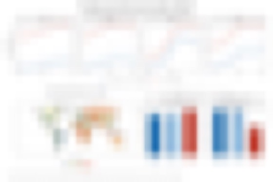
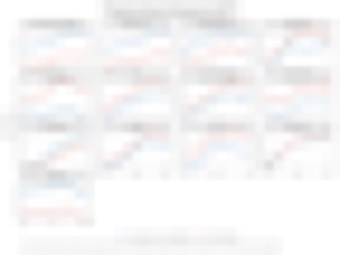
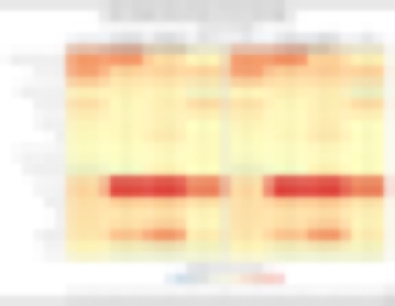
Obesity-related cancers: global epidemiology
Joinpoint regression over GBD incidence and mortality, correlated against obesity trends by country and sex. The most computation-heavy study: 300+ result sets generated.
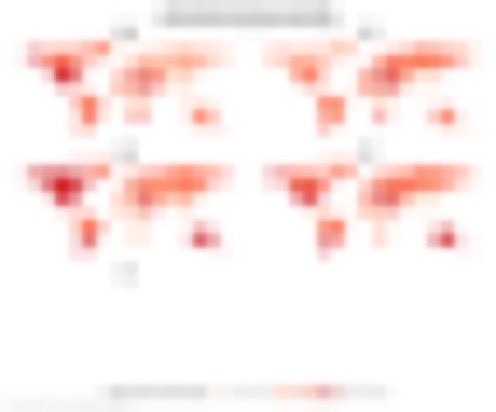
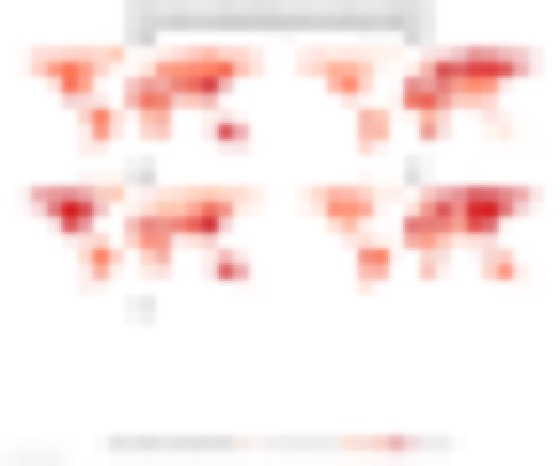
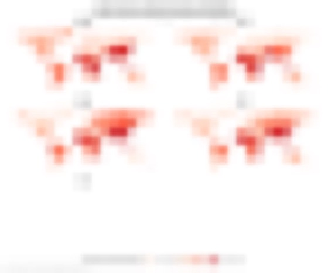
Obesity across Africa: 54 countries, all ages
Life-course analysis (adolescents, adults, older adults) of the continent's fastest-moving epidemic, with sex-disparity and double-burden framing.
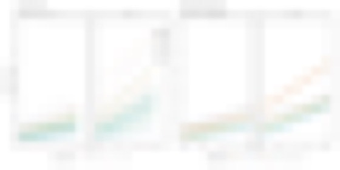
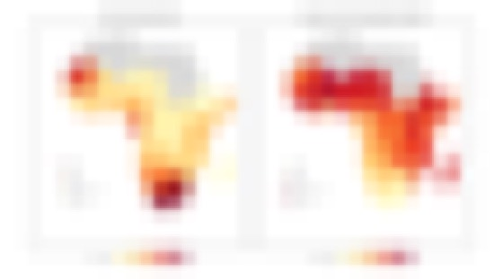
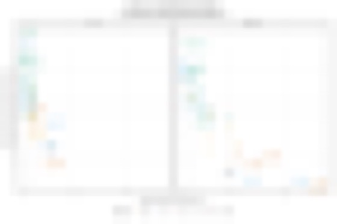
Adult obesity: long-run national trends
Deep-dive into one national series with method-comparison and sensitivity work behind every estimate: the unglamorous rigor reviewers ask for.
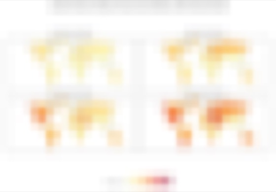
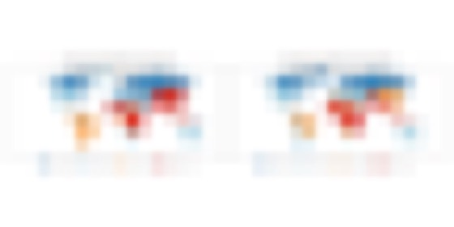
Adolescent obesity: quartile & map cycle
Re-run on the newest global estimates: age-band quartile mapping (10–14 vs 15–19), regional time-series, fastest/slowest movers.
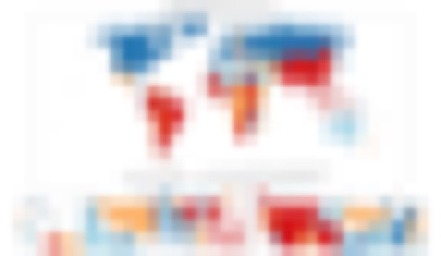
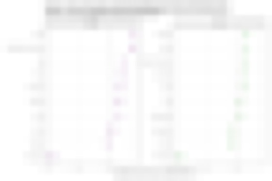
Scoping review: NCDs in the Horn of Africa
PRISMA-ScR evidence mapping in a setting where the literature is thin and scattered: the kind of review that has to be built, not just searched.
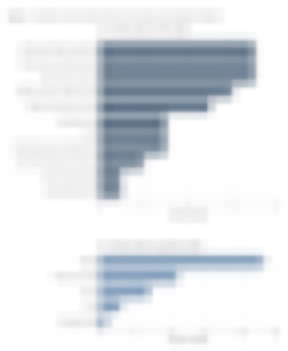
flow + evidence map
Oncology nursing workload: measurement & validation
Clinical analytics at a Taipei cancer center: 10 months of weekly workload monitoring, instrument validation, and reporting tooling for nursing leadership.
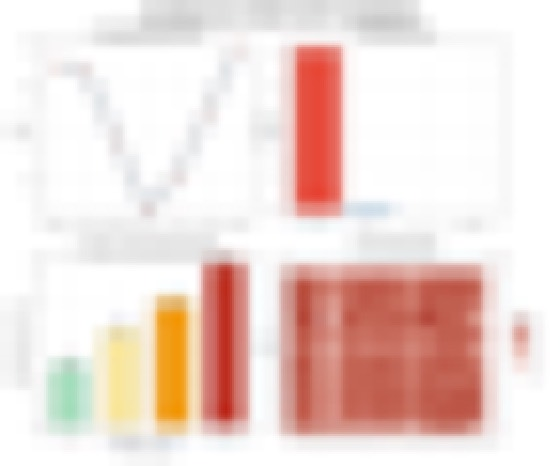